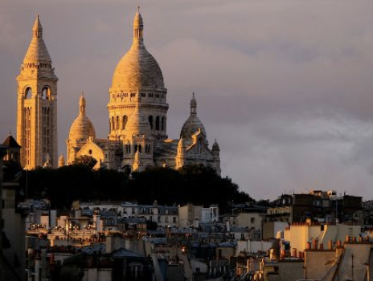

In Paris for LeWeb? Take a walk in scenic Montmartre
Shared 8 minutes ago
fotopedia.com •
Montmartre is a hill which is 130 metres high,
giving its name to the surrounding district,
in the north of Paris.
Montmartre is primarily known for the white-domed
Basilica of the Sacré Cœur on its summit and as a nightclub district.
Many artists had studios or worked around the community of Montmartre
such as Salvador Dalí,
Amedeo Modigliani, Claude Monet,
Pablo Picasso and Vincent van Gogh.